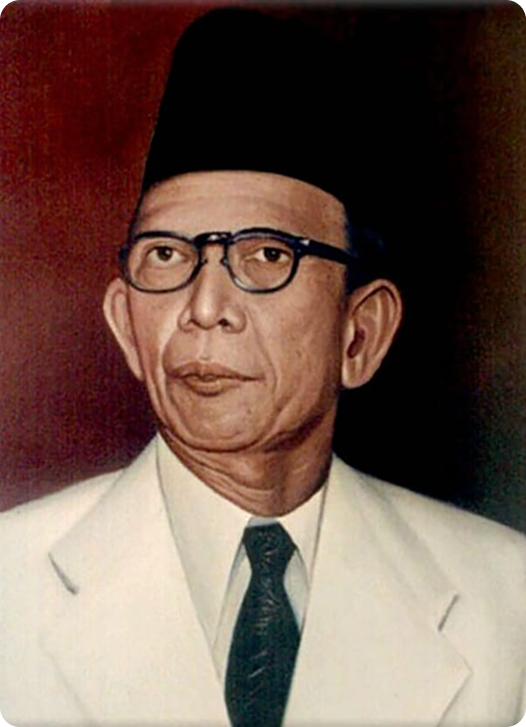

Ki Hajar Dewantara
Ki Hajar Dewantara, yang terlahir sebagai Raden Mas Soewardi Soerjaningrat pada 2 Mei 1889 di Yogyakarta, berasal dari keluarga bangsawan. Setelah tidak menyelesaikan sekolah kedokteran, ia memilih jalur jurnalistik dan menjadi penulis yang kritis terhadap pemerintah kolonial Belanda. Puncaknya, ia menulis artikel terkenal berjudul "Als Ik Eens Nederlander Was" yang mengecam perayaan kemerdekaan Belanda. Akibat tulisannya itu, ia diasingkan ke Belanda bersama dua rekannya, yang dikenal sebagai Tiga Serangkai. Mendirikan Taman Siswa Selama di Belanda, Soewardi mendalami ilmu pendidikan. Sekembalinya ke tanah air, ia melepaskan gelar kebangsawanannya dan mengganti namanya menjadi Ki Hajar Dewantara. Pada 3 Juli 1922, ia mendirikan Perguruan Nasional Taman Siswa di Yogyakarta. Sekolah ini didirikan sebagai perlawanan terhadap sistem pendidikan kolonial dan bertujuan untuk memajukan pendidikan bagi rakyat pribumi dengan berlandaskan nilai-nilai nasionalisme dan kebudayaan Indonesia. Konsep Pendidikan dan Semboyan Legendaris Ki Hajar Dewantara merumuskan semboyan yang menjadi landasan filosofi pendidikan nasional, yaitu: Ing Ngarsa Sung Tuladha (Di depan, memberi teladan). Ing Madya Mangun Karsa (Di tengah, membangun semangat). Tut Wuri Handayani (Di belakang, memberi dorongan). Semboyan ini menekankan peran pendidik sebagai panutan, motivator, dan pendorong bagi para siswanya. Pasca Kemerdekaan dan Warisan Setelah kemerdekaan Indonesia, Ki Hajar Dewantara menjabat sebagai Menteri Pengajaran (Pendidikan) pertama. Atas jasa-jasanya dalam merintis pendidikan nasional, ia dinobatkan sebagai Pahlawan Pergerakan Nasional. Tanggal kelahirannya, 2 Mei, ditetapkan sebagai Hari Pendidikan Nasional, untuk mengenang dedikasinya dalam memperjuangkan hak pendidikan bagi seluruh rakyat Indonesia.
← Kembali